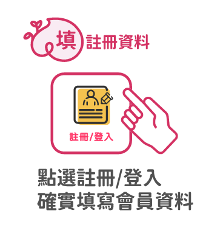

桃園市民卡 安心乘車 HAPPY 購
《安心乘車HAPPY購》線上抽獎影片
個人中獎查詢
請點選以下按鈕前往，或查詢桃園市民卡LINE官方帳號(@tycc)查詢個人中獎紀錄。
前往官方帳號查詢個人中獎紀錄安心乘車HAPPY購
活動期間
截至3/31（四）23:59止，逾時恕不受理。
活動辦法/獎項內容
| 【沒卡也OK，人人都能抽！50元計程車券】 |
|---|
| 獎項內容： 台灣大車隊－50元搭車金（10,000名） LINE TAXI－50元乘車券（10,000名） 獎項限於桃園地區使用。 參加條件： 加入桃園市民卡LINE官方帳號，完成註冊者。 資料請務必確實填寫，若資料錯誤或不符以致系統無法驗證身分，將影響您的參加資格。 透過「虎你好運抽紅包」活動註冊者，仍擁有抽獎資格。 |
| 【市民卡厲害！持卡再抽包月乘車套票】 |
|---|
| 活動獎項： 台灣大車隊－30天100元搭車金（50名） LINE TAXI－30天100元乘車券（50名） 獎項限於桃園地區使用。 參加條件： 加入桃園市民卡LINE官方帳號，完成註冊之市民卡持卡人。 資料請務必確實填寫，若資料錯誤或不符以致系統無法驗證身分，將影響您的參加資格。 透過「虎你好運抽紅包」活動註冊者，仍擁有抽獎資格。 |
參與活動
-
輸碼掃Code－輸入桃園市市民卡 Line ID：@tycc 或掃描 QRCode 二維碼。
-
一鍵加好友－點選「加入好友」，加入桃園市市民卡官方 Line 帳號。
-
註冊為會員－填寫基本資料，成為市民卡會員
提醒您，資料請務必確實填寫，若資料錯誤或不符以致系統無法驗證身分，將影響您的活動參與資格。
- 
兌獎流程
-
獎項將於4月初，由主辦單位以電腦隨機亂數方式抽出幸運得獎者；中獎名單將於抽出後5個工作天公告桃園市市民卡主題網站與活動網站。請中獎人務必妥善保管中獎推播訊息，並依中獎公告及通知流程進行後續兌獎。
-
中獎人經訊息通知後，依照下列說明及指示操作，即可獲得「LINE TAXI」數位乘車券或「台灣大車隊55688」搭車金。
台灣大車隊： 於「台灣大車隊55688」APP，點選「我的」進入「優惠碼」功能，輸入指定優惠碼並按下「領取」鍵。
LINE TAXI：於「LINE TAXI」聊天室，點選「會員中心」進入「輸入優惠序號」功能，輸入指定優惠碼並按下箭頭符號。 -
本活動兌獎期限依實際顯示日期為主；逾期未領者將視為自動放棄資格。
注意事項
-
「包月乘車券」獎項限市民卡持卡人參與，認同卡恕不適用；於註冊後及活動截止前申請或變更市民卡之桃園市民，系統將依您的最終資料驗證並作為判斷依據，確認抽獎資格。因系統資料拋送問題，如於111/3/31（含）前遷入桃園戶籍但系統未顯示正確活動資格者，請將身分證影本於活動截止前寄送至客服信箱，由主辦單位進行查驗。
-
每人僅需至市民卡官方LINE帳號註冊一次，擁有多張市民卡者無須重複參加活動。抽獎方式為電腦隨機亂數抽出參與者，先抽50元乘車券，再抽包月乘車券，每人最高限中獎一次。
-
依中華民國稅法規定，中獎贈品或獎金價值超過1,001元者，填發扣（免）繳憑單予中獎人，中獎人於年度報稅時必須計入個人所得合併申報。
-
請確實登錄有效之資料與填寫正確個人資料，若登錄或個人資料填寫不實、錯誤、不完整、無法辨識、虛構、偽造、盜用等，視同自動放棄中獎資格。
-
本活動之網路登入或有效紀錄，均以本府電腦系統之紀錄與認定為準。本府有權檢視各行為是否涉嫌人為操作，對於蓄意偽造、詐欺或為其他不正當交易，本府保有取消中獎資格之權利，並保留法律追訴權。
-
授權代領獎品，請受託人攜帶本人身分證正本、委託人之授權委託書（請註明代理事宜、委託人與受託人之姓名、身分證字號與相關個人資料，並請雙方親自簽名）至兌獎地點辦理代領事宜。
-
活動辦法、期間、中獎名單及相關詳情，以本府市民卡主題網站之公告為準，本府保有修正、補充說明、暫停或終止活動之權利，如有任何變更將公布於活動網站，恕不另行通知；其他未盡事宜，悉依本府相關規定或解釋辦理。
-
如需洽詢兌獎及活動相關事宜，請將問題及相關截圖寄送至客服信箱，或於上班時間（平日8:00-17:00）撥打客服專線03-3322107 由專人為您服務。